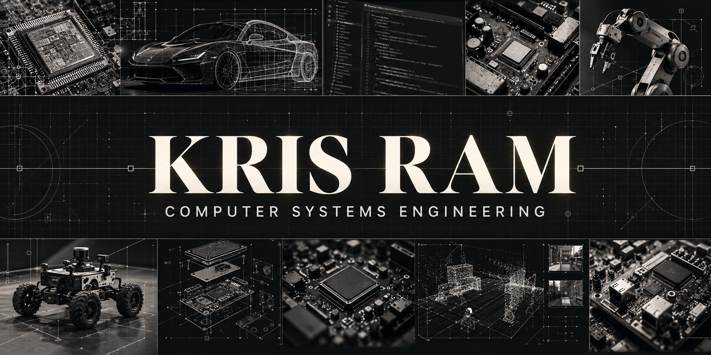

About me
Curious about
what makes it work.
I’m Kris Ram, studying Computer Systems Engineering at the University of Auckland.
Building across disciplines.
I enjoy projects that connect software to real hardware. My work includes programming, embedded motor and sensor systems, analog front ends and PCB design.
I’m also interested in cars, robotics and mechanical design, and how these fields intersect with computing.
Areas of interest
- Embedded systems & robotics
- Software development
- Electronics & PCB design
- Automotive technology
- Mechanical design & CAD
